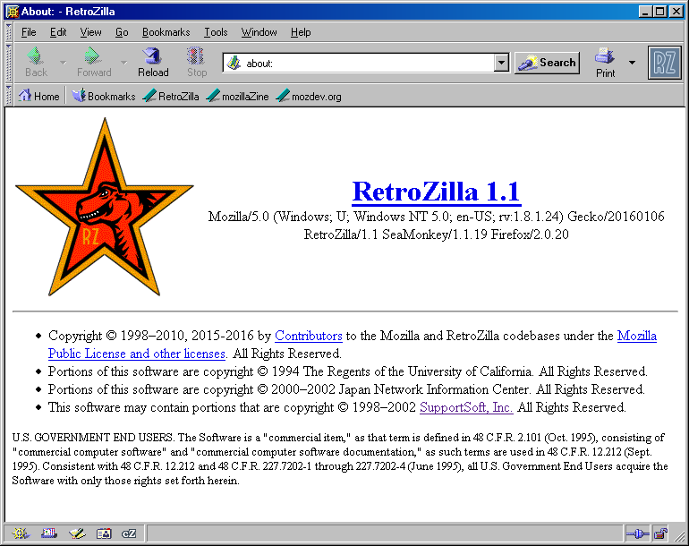

|
|
RetroZilla |
RetroZilla is my fork of Gecko 1.8.1 for improved compatibility on the modern web, with Windows 95 and Windows NT 4.0 in mind. Right now, RetroZilla's rendering capabilities are pretty similar to Firefox 2.0's, but as RetroZilla progresses, so will its capabilities.
Right now, I am focusing on RetroZilla Suite, a build of SeaMonkey/Mozilla Suite, because the suite provides both a browser and an email client in one package, along with other utilities. As RetroZilla progresses, I may also provide builds of Firefox and Thunderbird. The Firefox code is already in the tree, and if there's popular demand, I will copy over the Thunderbird code for personal builds.
* - Please read NT 3.51 section below.
** - RetroZilla will run on modern versions of Windows, however it is not extensively tested on anything beyond Windows 2000 and XP. RetroZilla should install on 64-bit Windows as normal using WoW64, however a 64-bit native version will not be officially built. Bugs exclusively found on modern Windows versions will be considered very low priority.
The GUI instaler will guide you through the installation process, giving you
a choice of where and what to install.
Download GUI Installer
RetroZilla binary files in a zip archive for advanced users.
Download ZIP Archive
The RetroZilla GUI installer does not work on Windows NT 3.51, you must use the ZIP archive. Extract the archive to a location of your choosing and run retrozilla.exe. The following additional components must be installed on your system:
After verifing the above components installed, please reboot your PC. RetroZilla should then be able to run from the extracted directory. Profiles are created under %WINDIR%\RetroZilla.
RetroZilla is compatible with add-ons for SeaMonkey 1.19. Eventually, RetroZilla-specific add-ons will be created and posted on this website. RetroZilla supports NPAPI plugins.

WARNING: RetroZilla is NOT a secure browser, and is provided for entertainment purposes only. It is a build of a browser from 2007, and contains most security vulnerabilities found since then. I do not recommend using RetroZilla to do secure activities such as banking or shopping. The RetroZilla development team is not responsible for any stolen information or malware obtained while using our product. USE AT YOUR OWN RISK.